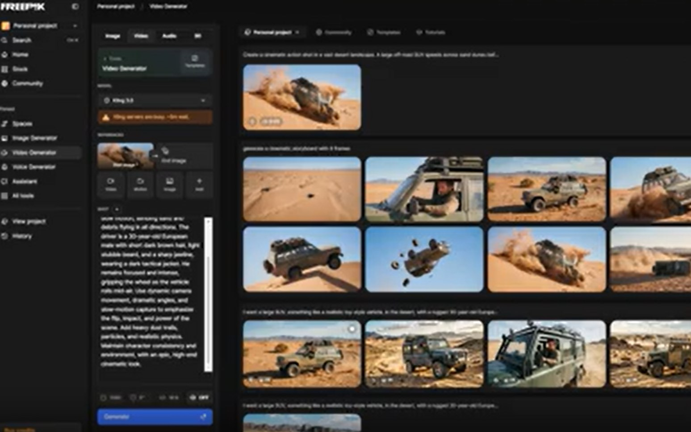
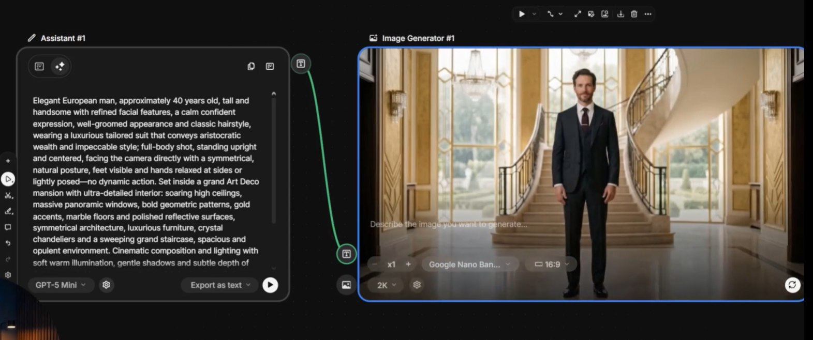
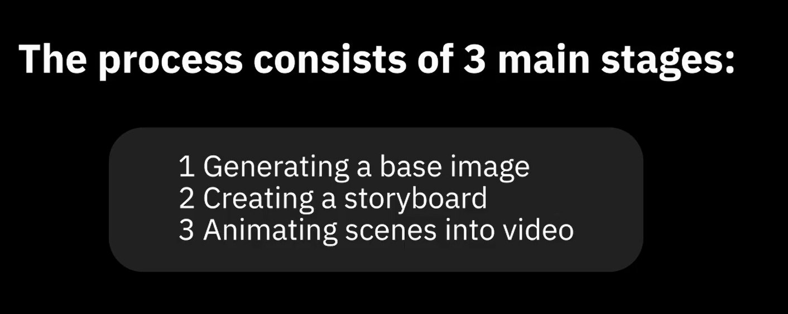
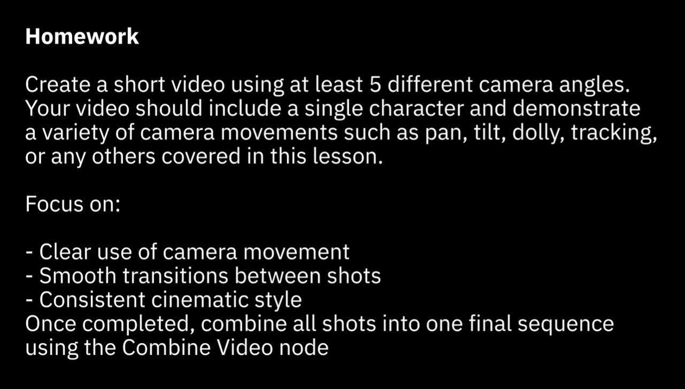

Acesso Rápido
🎬 O que é um Filme
Vídeo vs Cinema, os 3 elementos, narrativa
📐 Linguagem Visual
Planos, regra dos terços, composição
🎪 Narrativa em 3 Atos
Estrutura clássica, storyboard, continuidade
🎨 Cor, Luz e Atmosfera
Paletas emocionais, iluminação, color grading
🔊 Som como Personagem
Áudio, trilha sonora, silêncio intencional
O que você vai criar
Exemplos reais de cenas cinematográficas geradas com as técnicas desta trilha

Video Generator com galeria de storyboard — pipeline completo no Freepik

Resultado cinematográfico com composição dirigida por prompt

Cena de ação gerada com controle preciso de câmera e ambiente

Composição cinematográfica final com iluminação e atmosfera controladas
🎬 O que é um Filme
A diferença entre registrar e narrar — os fundamentos que separam um vídeo de uma obra cinematográfica.
A distinção fundamental entre vídeo e cinema está na intenção: vídeo registra o que acontece, cinema conta o que deve ser sentido. Todo frame cinematográfico é uma decisão consciente de direção.
Sem essa distinção, você vai gerar cenas aleatórias sem coesão narrativa. Entender intenção é o que transforma um prompt em direção cinematográfica.
Intenção narrativa • Direção de cena • Decisão de composição • Ponto de vista do diretor
Toda cena cinematográfica tem três componentes essenciais: quem (personagem), onde (ambiente) e o que está em tensão (conflito). Sem os três, a cena não existe cinematograficamente.
Aplicar esses três elementos aos seus prompts garante que cada cena gerada tenha significado narrativo, não apenas beleza visual.
Personagem como foco • Ambiente como contexto • Conflito como motor • Triangulação dramática
O cérebro humano lê imagens em padrões previsíveis — da esquerda para direita, do mais brilhante ao mais escuro, seguindo linhas e contrastes. Visual literacy é entender esse trajeto do olhar.
Quando você sabe para onde o olho vai naturalmente, consegue guiar o espectador exatamente onde quer — destacando o que importa, escondendo o que não importa.
Direção do olhar • Pontos focais • Contraste como atenção • Hierarquia visual
A narrativa linear segue ordem cronológica (começo → meio → fim). A não-linear embaralha o tempo para criar suspense ou surpresa. A documental imita a realidade para dar autenticidade.
Escolher o tipo de narrativa antes de gerar as cenas define a lógica de montagem do seu filme. Sem isso, as cenas ficam desconexas mesmo sendo individualmente belas.
Cronologia • Flashback/flashforward • Falso documental • Estrutura de montagem
O processo de transformar uma ideia abstrata em um frame concreto e dirigido. Envolve definir emoção → cena → composição → iluminação → câmera — tudo antes de escrever o prompt.
Quem pula essa etapa escreve prompts vagos e obtém resultados aleatórios. Quem domina o fluxo conceito → frame escreve prompts precisos e obtém exatamente o que imaginou.
Briefing de cena • Decupagem mental • Prompt como roteiro • Direção antes de geração
A IA é uma câmera com orçamento infinito, mas que precisa de um diretor competente. As ferramentas mudam radicalmente a produção, mas os princípios cinematográficos permanecem os mesmos.
Entender que a IA amplifica sua visão (e seus erros) é crucial. Quem tem base cinematográfica sólida usa a IA com maestria. Quem não tem, produz ruído visual em escala.
IA como ferramenta de produção • Princípios atemporais • Diretor como curador • Escala sem equipe
📐 Linguagem Visual
Os fundamentos da composição cinematográfica — como planos, linhas, espaço e profundidade criam significado visual.
O tipo de plano define quanto do sujeito e do ambiente o espectador vê. Do plano geral (toda a cena, personagem pequenininho) ao detalhe (apenas um olho, uma mão), cada escolha carrega emoção diferente.
Nos prompts do Freepik, especificar "extreme close-up", "wide shot", "medium shot" muda completamente o resultado. Dominar a nomenclatura é dominar a câmera virtual.
Wide shot • Medium shot • Close-up • Extreme close-up • Aerial shot • Dutch angle
Divida o frame em uma grade 3x3. Os quatro pontos de interseção são naturalmente atraentes para o olho humano. Posicionar o sujeito nesses pontos (não no centro) cria composições mais dinâmicas e interessantes.
Mencionar "off-center composition", "subject on the right third" em prompts gera frames com mais tensão visual do que simplesmente centrar o personagem.
Grade 3x3 • Pontos de interseção • Horizonte em 1/3 • Desequilíbrio intencional • Leading room
Profundidade de campo é a zona de foco nítido em uma imagem. Rasa (shallow depth of field) = fundo desfocado, isolando o sujeito. Profunda = tudo em foco, contextualizando o sujeito no ambiente.
Em prompts, "shallow depth of field", "bokeh background", "f/1.4" criam imagens com peso cinematográfico imediato — o mesmo efeito que levou gerações de cineastas a pagarem fortunas por lentes anamórficas.
Shallow DOF • Bokeh • Foco seletivo • Abertura de lente (f-stop) • Isolamento do sujeito
Linhas em uma imagem (estradas, trilhos, corredores, horizontes) guiam naturalmente o olhar do espectador. Linhas convergentes criam profundidade. Linhas diagonais criam tensão. Horizontais criam calma.
Descrever ambientes com geometria intencional nos prompts — "long corridor leading to a distant figure", "railroad tracks disappearing into fog" — ativa composição poderosa automaticamente.
Linhas guia • Perspectiva convergente • Simetria vs desequilíbrio • Geometria como emoção
Espaço negativo é a área vazia ao redor do sujeito. Longe de ser desperdício de frame, é uma ferramenta poderosa: quanto mais espaço vazio ao redor de um personagem, mais ele parece isolado, vulnerável ou livre.
Frames cheios de informação visual causam ansiedade ou confusão. Frames com espaço negativo dominado criam impacto emocional. Saber quando esvaziar é tão importante quanto saber quando encher.
Espaço negativo • Isolamento visual • Minimalismo cinematográfico • Breathing room
Usar elementos do ambiente (janelas, portas abertas, arcos, galhos de árvores) para criar um segundo "frame" dentro do frame principal. A câmera mostra o sujeito através de uma moldura natural do ambiente.
Este recurso adiciona profundidade, mistério e atenção focal imediata. Nos prompts, "framed by a doorway", "seen through a window" criam composições com sofisticação visual imediata.
Framing natural • Profundidade em camadas • Voyeurismo visual • Moldura como narrativa
🎪 Narrativa em 3 Atos para IA
A estrutura clássica adaptada para geração de vídeo com IA — como planejar, sequenciar e manter coerência entre cenas geradas.
O primeiro ato apresenta quem é o personagem e qual é o mundo onde ele vive. Em vídeos curtos gerados por IA, você tem aproximadamente 10 segundos para estabelecer esses dois elementos antes de perder o espectador.
Cenas de apresentação mal construídas tornam o restante do filme incompreensível. Dominar a abertura é dominar a atenção do espectador do primeiro segundo.
Establishing shot • Apresentação de personagem • World-building visual • Hook inicial
O segundo ato é onde algo muda — o clima, a luz, a câmera, o ritmo de corte. Em filmes de IA, o conflito não precisa ser narrativo literal: pode ser visual — uma mudança de paleta, um movimento de câmera inesperado.
Sem conflito, o filme é uma sequência de imagens bonitas sem tensão. O conflito é o que faz o espectador querer continuar assistindo até o fim.
Virada narrativa • Tensão visual • Mudança de ritmo • Cortes mais rápidos • Crise
A resolução fecha o arco emocional. Pode ser um retorno à calmaria, uma transformação do personagem, ou simplesmente um frame final com impacto estético que diz "acabou" com clareza.
O último frame é o que o espectador carrega. Uma resolução fraca arruína tudo que veio antes. Uma resolução forte eleva todo o material anterior.
Fechamento emocional • Último frame • Fade out • Resolução visual • Catarse
Um storyboard é um mapa visual de 6 a 9 quadros desenhados (mesmo que simples) que representam as cenas-chave do seu filme. É o planejamento que impede você de gerar 30 clipes aleatórios e tentar montar depois.
Diretores profissionais storyboardam antes de filmar. Com IA, o custo de geração é baixo — mas o custo de tempo para reprocessar é alto. Storyboard economiza dezenas de iterações desnecessárias.
Mapa de cenas • Sequência visual • Esboço de composição • Planejar antes de gerar
Continuidade é a coerência visual entre cenas consecutivas: o mesmo personagem, o mesmo cenário, a mesma paleta de cores, o mesmo estilo. É o maior desafio da produção com IA generativa.
Sem continuidade, seu filme parece uma colagem de cenas aleatórias. Dominar técnicas de continuidade (prompt anchoring, reference images, seed control) é o que separa amadores de produtores sérios.
Prompt anchoring • Imagem de referência • Coerência de estilo • Seed control • Matchcut
Pacing é a velocidade percebida do filme — determinada pela duração de cada cena e a frequência dos cortes. Cortes rápidos criam urgência. Cenas longas criam contemplação. O ritmo conta a história tanto quanto as imagens.
Muitos criadores de IA geram cenas de 4s e montam tudo no mesmo ritmo. Variar a duração das cenas transforma um conjunto de clipes em um filme com respiração própria.
Duração de cena • Frequência de corte • Ritmo narrativo • Accelerando / ritardando visual
🎨 Cor, Luz e Atmosfera
Como cores e iluminação comunicam emoção antes de qualquer ação — e como usar isso nos seus prompts para criar atmosfera cinematográfica.
Cores frias (azul, teal, cinza) criam sensação de distância, frieza e suspense. Cores quentes (laranja, âmbar, vermelho) criam intimidade, conforto ou perigo. Toda grande produção define a paleta emocional antes de filmar.
Especificar paleta nos prompts — "cold blue tones", "warm amber glow", "desaturated gray palette" — é um dos recursos mais poderosos para garantir coerência emocional entre todas as cenas.
Temperatura de cor • Psicologia das cores • Paleta restrita • Consistência emocional
A iluminação natural (sol, nuvens) é suave e realista. A dramática (Rembrandt light, chiaroscuro) cria contraste extremo e tensão. A artificial (neon, lampada única) define gênero e época. A silhueta elimina detalhes e cria mistério.
Cada tipo de iluminação carrega um gênero associado na memória do espectador. "Hard rim light" evoca thriller. "Soft natural light" evoca drama intimista. Usar a iluminação certa é atalhar para a emoção desejada.
Luz natural • Chiaroscuro • Neon light • Silhueta • Rim light • Back light
Certas palavras-chave atmosféricas carregam pacotes inteiros de informação visual nos modelos de IA: "golden hour" = luz quente lateral + sombras longas. "Neon noir" = noite chuvosa + luzes coloridas refletidas. "Foggy morning" = névoa + luz difusa.
Esses termos de atmosfera são atalhos poderosos. Em vez de descrever cada elemento, uma palavra-gatilho ativa uma estética inteira. É o vocabulário cinematográfico que a IA foi treinada para reconhecer.
Palavras-gatilho • Golden hour • Blue hour • Foggy • Neon noir • Overcast • Dramatic storm
Color grading é o processo de ajustar as cores de um filme na pós-produção para criar uma estética visual coesa. É o que faz filmes da A24 terem aquele visual específico, ou filmes de ação terem aquele teal-and-orange característico.
Mesmo com IA, você pode referenciar looks de color grading famosos nos prompts: "cinematic teal and orange grade", "desaturated film look", "warm vintage tone". Isso alinha o estilo visual de todas as cenas do projeto.
LUT • Teal-and-orange • Estética A24 • Desaturação seletiva • Film grain • Looksfilter
Contraste é a diferença entre as áreas mais claras e mais escuras do frame. Alto contraste cria drama e tensão. Baixo contraste cria suavidade e melancolia. A sombra é o que não se vê — e é frequentemente mais poderosa do que o que se mostra.
"High contrast lighting", "deep shadows", "chiaroscuro lighting" nos prompts produzem imagens com muito mais peso visual e emoção do que iluminação uniforme e plana.
Ratio luz/sombra • High contrast • Low key • Deep shadows • Chiaroscuro • Shadow as mystery
Em alguns filmes, a luz não apenas ilumina — ela conta a história. A luz que entra por uma janela e vai diminuindo indica o passar do tempo. Uma luz que pisca indica instabilidade. Uma luz que se apaga marca um ponto sem retorno.
Usar luz como personagem nos prompts — "a single shaft of light cutting through darkness", "flickering neon casting uneasy shadows" — cria cenas que comunicam narrativa sem precisar de nenhum ator ou diálogo.
Luz narrativa • Luz como metáfora • God rays • Luz em movimento • Significado simbólico da luz
🔊 Som como Personagem
O áudio vale metade da experiência cinematográfica — aprenda a planejar trilha, efeitos e silêncio junto com as imagens.
Pesquisas de percepção audiovisual mostram que o cérebro processa o áudio antes da imagem. A mesma cena muda completamente de significado dependendo da música. Walter Murch, editor de Apocalypse Now, dizia: "o som é 50% do filme".
Criadores de conteúdo com IA frequentemente negligenciam o áudio — e isso destrói o potencial das imagens. Planejar o som antes de gerar os clips define o ritmo, a emoção e até a duração de cada cena.
Primazia do som • Sincronização áudio-visual • Expectativa sonora • Memória auditiva
Ambient: sons naturais e texturas sonoras que criam ambiente sem chamar atenção. Dramático: orquestral com crescendos que amplificam emoções. Minimalista: poucas notas com muito espaço. Épico: grandioso, para escala e impacto.
Escolher o tipo de trilha antes de editar define o ritmo de corte. Um clipe que funciona com música ambient a 60 BPM vai precisar de cenas mais longas do que um com trilha dramática a 140 BPM.
BPM como ritmo de corte • Mood da trilha • Leitmotif • Underscoring • Score vs. song
Som diegético existe dentro do mundo da história — o personagem ouve. Passos, vento, conversas. Som non-diegético existe apenas para o espectador — música de fundo, narração. A distinção importa para criar imersão ou distância.
SFX bem aplicados tornam imagens de IA completamente convincentes. O cérebro "vê" o que o ouvido confirma. Passos sincronizados, vento, impactos — esses sons completam a ilusão cinematográfica.
Diegético • Non-diegético • Foley • Sound design • Sincronização de impacto
Voz over (narração) é um recurso poderoso quando a imagem não pode contar toda a história. Mas quando usada desnecessariamente, ela reduz a autonomia do espectador e explicita o que deveria ser mostrado visualmente.
A regra clássica: "se você pode mostrar, não narre". Narração é poderosa para contexto histórico, estados internos, ou criar distância irônica. Usada errada, é a marca de quem não confia nas imagens.
Voice over • Show don't tell • Narrador não-confiável • Voz como ponto de vista • Narração em off
Silêncio intencional — tirar o áudio de repente, ou manter uma cena sem música e sem efeitos — cria um vácuo sonoro que o espectador sente fisicamente. É um dos recursos mais poderosos e menos usados do cinema.
Filmes que nunca ficam em silêncio cansam o espectador. O silêncio é o espaço onde a emoção respira. Planejar momentos de silêncio é tão importante quanto escolher a trilha sonora.
Silêncio dramático • Drop • Vácuo sonoro • Contraste auditivo • Peso do silêncio
O erro mais comum: gerar todos os clips, montar o vídeo, e só então procurar música. O processo correto é o inverso — escolha a trilha sonora primeiro, ela define o BPM, a duração das cenas, o ritmo de corte e a atmosfera geral.
Quando você edita na música, o filme respira. Cortes no beat, crescendos sincronizados com ação, silêncios que coincidem com closes — tudo isso só funciona se o áudio veio antes da edição final.
Áudio-primeiro • Cut on beat • Sincronização emocional • Pré-produção sonora • Workflow audio-first